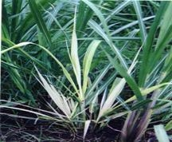

SUGARCANE :: MAJOR DISEASE :: RATOON STUNTING
Ratoon stunting - Clavibacter xyli sub sp. xyli(Rickettsia Like Organism - RLO)
Symptoms
Diseased clumps usually display stunted growth, reduced tillering, thin stalks with shortened internodes and yellowish foliage. Orange-red vascular bundles in shades of yellow at the nodes are seen in the infected canes.
|  |
Symptoms |
Pathogen
The pathogen (Clavibacter xyli sub sp. xyli) is a RLO known to be present in the xylem cells of infected plants. They are small, thin, rod shaped or coryneform (0.15 to 0.32µm wide and 1.0-2.7µm long) and Gram positive.
Disease cycle
The primary spread is through the use of diseased setts. The disease also spreads through harvesting implements contaminated with the juice of the diseased canes. Maize, sorghum, Sudan grass and Cynodonserves as collateral hosts for the pathogen.
Management
- Select the setts from disease free fields or from disease free commercial nursery.
- Remove and burn the clumps showing the disease incidence.
- Treat the setts before planting, as specified for grassy shoot disease.